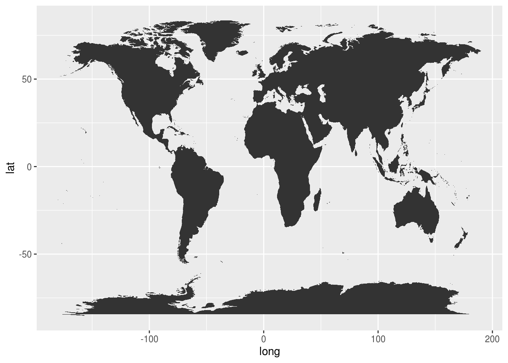
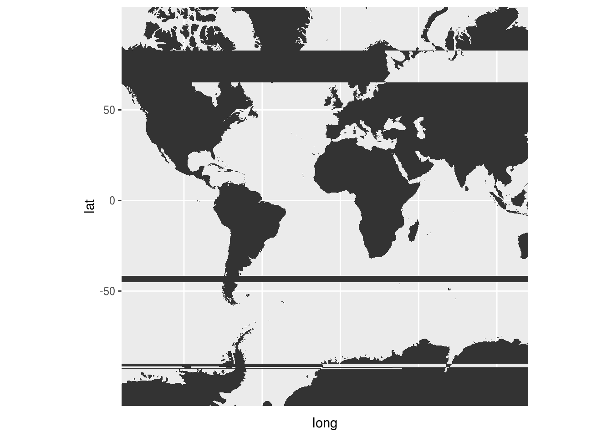
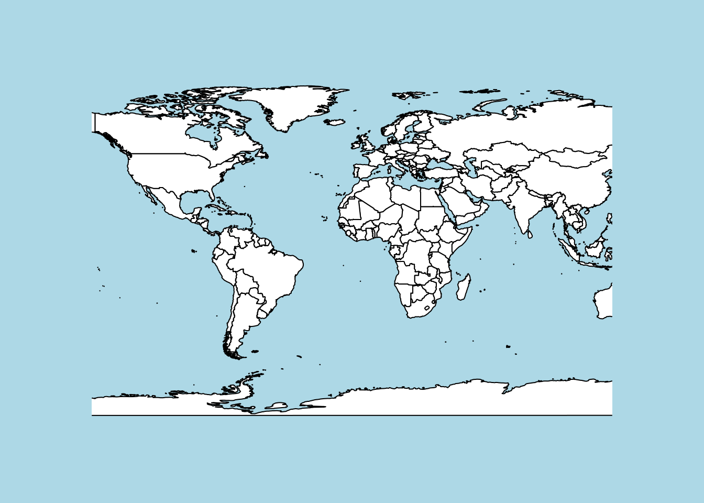
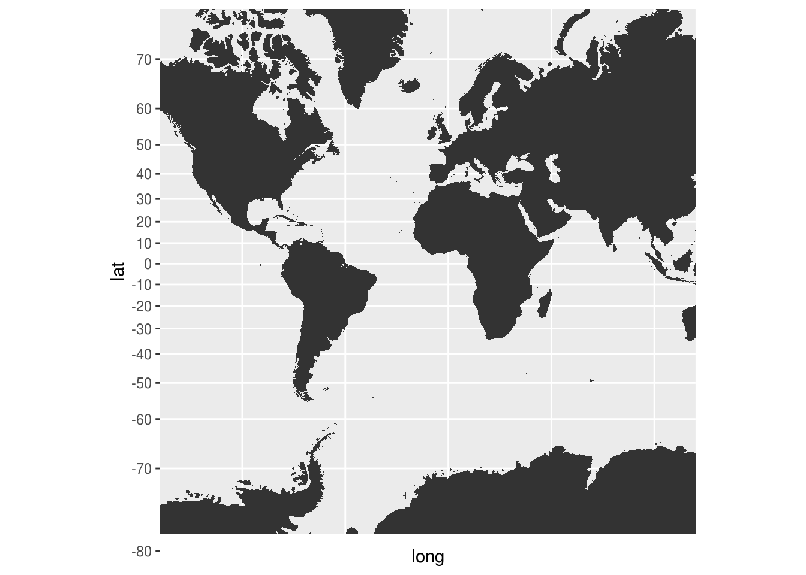
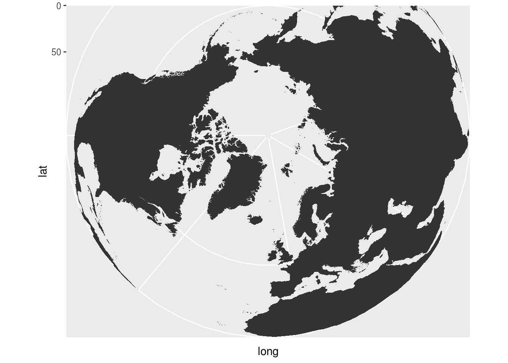

3 绘制地图
题目：ggplot 绘制世界地图的基本方法是这样的：

我想根据经纬度的范围来切出一块来，例如：

就乱套了，有些地方出现了横跨左右的冗余色块。如果改用 geom_path() 则出现冗余线条。
SO 上类似的讨论给出的解答只在 xlim=c(-180,180) 适用。换个小范围就不行了。
ggplot2 官方说明书 章节末尾给出的示例图就是乱的，居然没有任何说明：

中文社区有文章详细介绍如何画地图，然而给的示例中，同样无视这个问题：
如何能做出纬度均匀、无冗余色块、展示宽广区域的地图呢？
N 版
使用 maps 包，用 xlim 和 ylim 指定范围即可。

T 版
在 coord_map() 函数里用 projection 更换投影坐标系，用 orientation 选择视角。
例如，用默认投影和北极视角，可以消除冗余色块，但是纬度不均匀。

如果用球面投影 “ortho”，纬度虽然不均匀，但显示在球面上更为自然，可是球背面就被挡住了，非洲和南美洲很难看到：

止步于此。